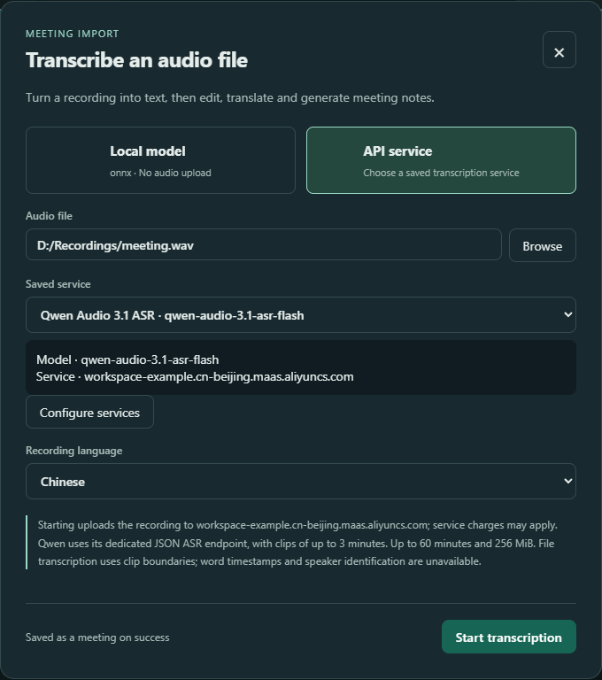

Scenario guide
Speech to text and multilingual subtitles
For dictated notes, lectures and remote-call captions.
What you will get
See source text and translations, with a transcript you can copy or export.
Before you start
- Check the input and recognition model. For a remote call, test that the input includes the voices you need.
- Test text translation before enabling translated captions. The ONNX/FunASR live pipeline currently supports up to three translation outputs.
Use Alibaba Cloud realtime transcription
Aliyun · Paraformer realtime transcription is included in the r466 preview; the r468 candidate centralizes model settings. Save the endpoint, key and model once in Setup, then select Aliyun when recording. Choose Manage service to change the model. The server confirms sentences and Stop waits for completion. Cloud-account and physical-microphone acceptance remain pending.
Use Doubao Speech realtime transcription
The r468 candidate includes a separate Doubao Speech realtime connection. Save its speech endpoint, key and resource once in Setup, then select Doubao for recording. Choose Manage service to change the resource. Use Automatic source language with empty hints and wait for confirmation after Stop. Account and physical-recording behavior still require validation.
Choose and set up recognition models
ASR and STT both turn speech into text. Open Setup → Local model library, choose Speech recognition as the use, then choose a model family. You can register several models, sizes or quantizations, then select a registered entry when using the app.
| Model or route | What to select | How it is used |
|---|---|---|
| SenseVoice · ONNX | A compatible folder containing model.onnx and tokens.json or tokens.txt. | Recording segments for captions and meetings. |
| Fun-ASR-Nano · 2512 | The complete Fun-ASR-Nano-2512 folder, including model.pt, config.yaml and matching Qwen3-0.6B configuration and tokenizer. | Recording segments for captions and meetings. Requires a build with this Rust backend enabled; it is not a native token-streaming recognizer. |
| Whisper · whisper.cpp | An actual GGML ggml-*.bin file. The download preset initially selects only ggml-base.bin; choose a different compatible file if needed. | Audio-file transcription. English-only .en models do not transcribe Chinese. |
| Saved speech API | Open API setup and save the provider, model and credentials. | File transcription and live audio sessions use different endpoints. A dedicated Qwen realtime connection cannot be substituted into the OpenAI-compatible transcription route. |
- Already have files? Click Register local model on the matching card. Give each size or quantization a distinct name, browse to its folder or file, and register it. An unfinished form is preserved; save or cancel it before switching.
- Need files? Click Prepare download, choose Hugging Face or ModelScope and a writable destination on your preferred disk, then scan. Review the selected files and total size before explicitly starting. Opening the preset does not start a download.
- After downloading, explicitly add the files to the library. Whisper requires choosing the actual downloaded GGML file. For FunASR Nano, the root model.pt already contains language-model weights; do not separately download Qwen weights.
- Refresh component status and check the files. If the build lacks the backend or helper, use an installer containing it. Registration does not install runtime components.
- Try a short recording, review the recognized text, then save Setup. A detected component or passed file check does not establish inference success, recognition quality or realtime performance.
After registration, choose its name in Model used for transcription at the top of the library, check its files, then expand Try transcribing a recording. To get files, use Prepare download beside the selected family or expand Download models and components below the library. Review the source and destination disk before explicitly starting a download. Registration changes the draft; finish and save Setup to keep it.

SenseVoice and FunASR Nano use segmented recognition here. Temporary text may change before finalization. For live audio APIs, save the connection in API setup first, then select the compatible saved service in recording settings. Only audio you explicitly submit is sent to that service.
For local Fun-ASR-Nano transcription of a long file, audio is processed in non-overlapping clips of up to 16 seconds, including a shorter final clip. Each clip keeps its own text; check repeated speech against the recording. Follow clip progress and wait for the task to stop after cancelling. If model generation does not finish normally, the task reports an error. Cancellation or failure is not a complete transcript. Keep the original recording and review the message before retrying.
FunASR Nano model files and license · Whisper GGML model files
Step by step
- 01
Record one complete sentence
Open Live subtitles, click Start and speak a sentence at normal volume. Temporary text may change; judge the finalized passage. Click Stop when finished.

Actual app UI · Select to enlarge; example data is not your result - 1Interim recognition appears here.
- 2Translations are grouped by language and segment.
- 02
Enable the languages you need
Select the tested translation provider and primary target language in settings. Start with one target, then add more. Each language makes a separate request and may add time. Changes apply to the next recording.

Actual app UI · Select to enlarge; example data is not your result - 1Select a configured translation service.
- 2Enter a short passage to test.
- 3Choose the target language.
- 4Run the test after entering valid settings.
- 03
Use Floating transcription for a small window
Select Floating transcription in the header. Its microphone controls recording and the return control opens the main window. Read the bilingual captions in the subtitle window. Verify recording with a click before trying your configured shortcut.

Actual app UI · Select to enlarge; example data is not your result - 04
Review, copy or export
After stopping, open Raw text and review it before copying or exporting. For failed translations, inspect Translation Recovery and explicitly retry. Repeated cloud requests may incur another charge.

Actual app UI · Select to enlarge; example data is not your result - 1Copy the source transcript.
- 2Export the transcript as a text file.
Transcribe a saved recording
Import a WAV recording from a meeting, class or voice memo through Transcribe Audio. API file transcription accepts WAV files of up to 60 minutes and 256 MiB. The app prepares mono 16 kHz audio for recognition and leaves the original file unchanged. For microphone captions, follow the live recording steps above.
- 01
Save the service in Setup Wizard
Open Setup Wizard, go to API Providers and expand Qwen Audio 3.1. Enable it and enter the workspace HTTPS root in Base URL. Replace
WorkspaceIdbelow with your actual Alibaba Cloud workspace ID.https://{WorkspaceId}.cn-beijing.maas.aliyuncs.comEnter an API Key that works in that workspace. In the ASR model field, enter exactly
qwen-audio-3.1-asr-flash. Use one model ID, without a comma-separated list, and leave endpoint paths off the root address. Continue to the final step and click Finish & Save. Closing the wizard discards this draft.For an existing OpenAI-compatible file transcription service, save its Base URL, API Key and available ASR model under OpenAI, then finish saving. A local compatible service may allow an empty key. Other providers' ASR models may use different protocols and are not all available in the transcription list.
- 02
Choose the recording and a saved service
Return to the main window, click Transcribe Audio and use Browse to select a WAV file. The dialog starts in Local model mode. To use a cloud or compatible API, switch to API service and choose a Saved service. Check its displayed model and host. You do not need to enter its address or key again.
For Chinese audio, set Recording language to Chinese. Choose Automatic if the language is uncertain. This describes the recording's language, not a translation target. If the service list is empty, click Configure services. The dialog closes and opens Setup Wizard; save the connection and reopen Transcribe Audio.

Actual app UI. The recording path and workspace connection are examples; use your own saved connection. UI language is English and the recording language is Chinese. - 1Choose your WAV file with Browse.
- 2Select the saved connection, then check its model and service host.
- 3Choose the recording language; this is not the translation target.
- 4Read the upload notice, then click Start transcription.
- 03
Check the upload destination and start
Read the upload notice, then click Start transcription. API mode sends the recording to the selected service, which may charge for it. Qwen clips are up to 3 minutes; OpenAI-compatible clips are up to 5 minutes. The app splits the recording within the whole-file limits, so you do not need to cut it manually.
Progress shows the number of completed clips. To stop, click Cancel transcription and wait for the result; Esc also requests cancellation. When Saving appears, wait for the meeting archive to finish.
- 04
Open the meeting and review the transcript
A successful import is saved as a meeting. Open Meetings & minutes and select the new session. Check names, numbers and technical terms against the original recording before translating, generating minutes or exporting.
This API import uses clip boundaries for timing and does not yet use provider word timestamps or speaker labels. Review unidentified speakers manually. One clip can contain several speakers.

How to verify success
The source text matches your speech, enabled targets appear, and copied or exported content contains the required passages.
If something goes wrong
Only your own voice appears
This workflow records the selected Input device; playing a meeting does not automatically capture its audio. Return to the first Setup Wizard step, select an already configured input that includes the remote participant, click Record for 5 seconds, ask them to speak and listen back. If they are absent from the recording, resolve the input source before changing the recognition model. Without a suitable input in the list, this workflow cannot directly select that meeting app's audio.
Captions remain on older content
Inspect recording and reading-follow status. Reading older passages pauses following; resume following and check new passages.
Source text appears without translation
Check the provider, target language and failure record, then test translation with text again. Transcription and translation can succeed or fail separately.
The saved Qwen service is missing from the list
Return to API Providers in Setup Wizard. Confirm that the service is enabled, its API Key is filled in, and its ASR model is qwen-audio-3.1-asr-flash. Base URL must be an HTTPS root with WorkspaceId replaced. Leave off /v1, /audio/transcriptions and full endpoint paths. Click Finish & Save and reopen the transcription dialog. Realtime, Streaming and other model IDs cannot replace this file recognition model.
API transcription reports an authentication error or no result
Check the key, workspace, model access and service connectivity. HTTP 401 usually calls for an authentication check. Retry with a short, clear Chinese WAV and Chinese as the recording language; another request may incur another charge. A working interface does not confirm that your account has access or that recognition quality meets your needs.
The recording format or size is rejected
API file transcription currently accepts WAV only, up to 60 minutes and 256 MiB for the whole file. Save other formats as a separate WAV file first. For a recording over the limits, save or split it into suitable files before importing. Keep the original and check the converted content.
Imported timings or speaker labels are too coarse
API import marks clip boundaries, without word-level alignment. Speakers still need manual review. Check the text and important details first, then rename only the passages whose speakers you have confirmed.